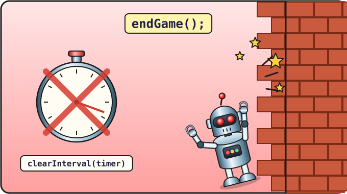

Lesson 12 of 16 ⏱ 50 minutes
Game over
In a real game you can lose — otherwise it's no fun. Our snake will die if it crashes into a wall or bites its own tail. And the words "Game over" will appear on the field.
- replace the portals with real walls;
- write a function
isOnSnakethat checks whether a cell is taken by the snake; - learn how to stop a timer (
clearInterval) and a function (return); - write text on the canvas.
| 5 min | The rules for losing |
| 15 min | Stopping the game: endGame, clearInterval, text on the canvas |
| 10 min | Walls instead of portals |
| 15 min | Biting the tail: isOnSnake |
| 5 min | Play! |

endGame(): clearInterval(timer) stops the timer and the snake freezes.Stopping the timer
The snake is moved by the setInterval timer. To stop the game, the timer has to be switched off. For that we need to remember it in a variable. Change the last line of the program:
setInterval(step, 200); let timer = setInterval(step, 200);
setInterval returns the timer's number, and we put it in timer. You switch the timer off with the command clearInterval(timer).
The "Game over" function
Add a new function after draw:
function endGame() {
clearInterval(timer);
ctx.fillStyle = "white";
ctx.font = "32px sans-serif";
ctx.textAlign = "center";
ctx.fillText("Game over", 200, 200);
}
clearInterval(timer)— switch off the timer:stepisn't called any more, the snake freezes;ctx.font— the size and style of the font: 32 pixels, a font without little "feet" (sans-serif);ctx.textAlign = "center"— centre the text;ctx.fillText(text, x, y)— write text at the point (x, y). The point (200, 200) is the middle of the field.
endGame() in the console and press Enter: the snake stops and the message appears. This is how you can test functions one at a time, even before they're connected to the game.
Walls
The portals were fun, but in classic Snake the walls are dangerous. Remove the four portal checks from step and put in one wall check:
function step() {
let head = { x: snake[0].x + dx, y: snake[0].y + dy };
if (head.x >= cells) {
head.x = 0;
}
if (head.x < 0) {
head.x = cells - 1;
}
if (head.y >= cells) {
head.y = 0;
}
if (head.y < 0) {
head.y = cells - 1;
}
if (head.x < 0 || head.x >= cells || head.y < 0 || head.y >= cells) {
endGame();
return;
}
snake.unshift(head);
...
With || ("or") we joined four questions into one: "is the head left of the field, or right of it, or above it, or below it?" If any of these is true, the game is over.
Why return?
return ends the function immediately: the lines below it don't run. Without it, the snake — having already "crashed" — would still add a head outside the field and redraw the picture on top of the "Game over" message.
Biting its own tail
We need to check whether the new head has landed on a cell where a piece of the snake already is. To do that, we go through all the pieces with a loop and compare the coordinates. Let's write a question-function that answers true or false:
function isOnSnake(x, y) {
for (let i = 0; i < snake.length; i++) {
if (snake[i].x === x && snake[i].y === y) {
return true;
}
}
return false;
}
How it works:
- the loop looks at each piece of the snake in turn;
- if there's a piece on cell (x, y), the function immediately answers
true("yes, the snake is here") and ends; - if the loop has checked them all and found nobody, the program reaches the last line and answers
false.
The function's name sounds like a question: is on snake?. That's the usual way to name functions that answer "yes" or "no".
Now let's use it in step, right after the wall check:
if (head.x < 0 || head.x >= cells || head.y < 0 || head.y >= cells) {
endGame();
return;
}
if (isOnSnake(head.x, head.y)) {
endGame();
return;
}
Save, refresh and test both ways of losing: crash into a wall, then grow the snake longer and bite yourself. To play again, press F5 for now. In the next lesson we'll make Space restart the game.
- Under "Game over" add a second, smaller line: "Score: …". Hint: change
ctx.fontto"20px sans-serif"and write the text 40 pixels lower. You can glue the score to the text with+. - Make the message red or yellow.
- ⭐ Before the message, draw a see-through rectangle so the text is easier to read. A colour with transparency is written like this:
"rgba(0, 0, 0, 0.6)"— black, 40% see-through.
📄 The whole snake.html file after this lesson
<!DOCTYPE html>
<html>
<head>
<meta charset="utf-8">
<title>Snake</title>
</head>
<body>
<h1>Snake</h1>
<p>Score: <span id="score">0</span></p>
<canvas id="game" width="400" height="400"></canvas>
<script>
let canvas = document.getElementById("game");
let ctx = canvas.getContext("2d");
let size = 20;
let cells = 20;
let snake = [
{ x: 10, y: 10 },
{ x: 9, y: 10 },
{ x: 8, y: 10 }
];
let apple = { x: 15, y: 10 };
let dx = 1;
let dy = 0;
let score = 0;
function clearField() {
ctx.fillStyle = "black";
ctx.fillRect(0, 0, 400, 400);
}
function drawCell(x, y, color) {
ctx.fillStyle = color;
ctx.fillRect(x * size, y * size, size - 1, size - 1);
}
function randomCell() {
return Math.floor(Math.random() * cells);
}
function isOnSnake(x, y) {
for (let i = 0; i < snake.length; i++) {
if (snake[i].x === x && snake[i].y === y) {
return true;
}
}
return false;
}
function draw() {
clearField();
drawCell(apple.x, apple.y, "red");
for (let i = 0; i < snake.length; i++) {
drawCell(snake[i].x, snake[i].y, "lime");
}
drawCell(snake[0].x, snake[0].y, "yellow");
}
function endGame() {
clearInterval(timer);
ctx.fillStyle = "white";
ctx.font = "32px sans-serif";
ctx.textAlign = "center";
ctx.fillText("Game over", 200, 200);
}
function step() {
let head = { x: snake[0].x + dx, y: snake[0].y + dy };
if (head.x < 0 || head.x >= cells || head.y < 0 || head.y >= cells) {
endGame();
return;
}
if (isOnSnake(head.x, head.y)) {
endGame();
return;
}
snake.unshift(head);
if (head.x === apple.x && head.y === apple.y) {
score = score + 1;
document.getElementById("score").textContent = score;
apple.x = randomCell();
apple.y = randomCell();
} else {
snake.pop();
}
draw();
}
function onKey(event) {
if (event.key === "ArrowUp" && dy !== 1) {
dx = 0;
dy = -1;
}
if (event.key === "ArrowDown" && dy !== -1) {
dx = 0;
dy = 1;
}
if (event.key === "ArrowLeft" && dx !== 1) {
dx = -1;
dy = 0;
}
if (event.key === "ArrowRight" && dx !== -1) {
dx = 1;
dy = 0;
}
}
document.addEventListener("keydown", onKey);
draw();
let timer = setInterval(step, 200);
</script>
</body>
</html>
Check yourself
- I know how to remember a timer in a variable and switch it off.
- I understand that
returnends a function right away. - I can explain how
isOnSnakelooks for a piece of the snake.